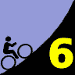

|  |
2007 Low-Key Hillclimbs Week 6 Results: Welch Creek 03 Nov 2007 |
| Gary Gellin (2nd) on Welch Creek (Kwan Low photo) |
The Low-Key promenade completed its 4.7 mile ride to Welch Creek Road and was greeted with pristine asphalt, blue skies, and a warming sun. A steep, smooth rode, virtually no car traffic, short sleeves, and cattle guards. Could it possibly be any better than this?
And so began the Low-Key Hillclimbs' conquest of Welch Creek Road, not only a first-timer for the series itself, but also for most of the participants. It would have been a first-timer for more of the participants, but an alarming number had pre-ridden it in the preceding weeks. Sometimes, it's better to not know what's coming.
And what was coming was steep. After an initial, innocent, few hundred meters, the sunshine-induced bliss was rended asunder by the rude acceleration of the roadway upwards, the first of many times it would subject the Low-Key masses to grades on the painful side of 10%.
Some respond to such direct challenges by shifting down, holding back on the effort, managing reserves for the more sustained grades which were known to follow. Series leader Tim Clark, however, is not among these, as he set a ferocious tempo at the front, leaving a wake of suffering beyond the ever-increasing gaps forming behind his rear wheel. Tim knows he doesn't need to sustain these early efforts; he just needs to maintain the gaps he establishes with them. And once again, he did so, finishing first among the Low-Key crew, with Hybrid-Electric afficianado Bill Bushnell absent for the first time this year. Tim, of Red Dragon, finished with an impressive time of , followed by Gary Gellin of Webcor/Alto Velo in 0:00, and Clark Foy of San Jose Bike Club in 0:00.
In the women's competition, it was an especially competitive week, as Lucia Mokres of LGBRC, who had finished right behind Janet Martinez of Friends of Janet in weeks 1 and 4 of this series, this week turned the tables, to finish tops among the women with a time of 0:00, with Janet third. 2007 first-timer Holly Harris of Tibco, who does quite nicely on steep roads, was between the two in second place. Anny Henry, absent for the second week in a row, nevertheless maintains her lead in the overall standings.
Of special note was Bob and Ileana Parker, who tackled Welch Creek today on their tandem. Impressive! Also, Sara Good flatted on climb, fixed her flat, and still finished with a solid time. Indeed, everyone present broke the hour, a nice result on a 1923 vertical foot climb.
In the team competition, it was Webcor/Alto Velo by a nose over Google, with LGBRC in third. Series leader Bike Trip was fourth this week, yet was able to hold onto their lead ahead of Google.
The Endurance Award standings are getting tight, with leader Amy Tan and second-place Kelly Kasik unable to make it. Meanwhile, Murali Krishnan of team Commuter made a strong showing this week, to come within 13 minutes of Amy's lead.
Thanks to coordinator Adam Tow, with help from Chris Boardman, Ron Brunner, Helen Chan, Genti Cuni, Christine Holmes, Martin Hyland, Howard Kveck, and Pat Parseghian for making today's climb possible!median time = 31:30
pl # rider team category time mph fph score 1 210 Tim Clark Red Dragon 35+ 24:20 9.62 4742 129.45 2 402 Gary Gellin Webcor/Alto Velo 35+ 24:52 9.41 4640 126.68 3 39 Clark Foy San Jose Bike Club 40+ 25:06 9.32 4597 125.50 4 382 Todd Sinclair Team Shonky 30+ 25:29 9.18 4528 123.61 5 54 Justin Lucke Google Vegan 25:59 9.01 4441 121.23 6 141 Carl A. Nielson Pegasus 45+ 26:38 8.79 4332 118.27 7 1 Dan Connelly TNT 3 26:38 8.79 4332 118.27 8 217 Thomas Novikoff Cambio 2 26:51 8.72 4297 117.32 9 45 Rupert Brauch Webcor/Alto Velo 3 27:12 8.60 4242 115.81 10 352 Geoff Drake Bike Trip 45+ 27:20 8.56 4221 115.24 11 309 Dan Hicklin LGBRC 4 27:27 8.52 4203 114.75 12 142 Rich Hill LGBRC 40+ 27:41 8.45 4168 113.79 13 328 Mark Edwards Bike Trip 45+ 27:48 8.42 4150 113.31 14 322 Christopher Bosch Google 5 Wannabee 28:01 8.35 4118 112.43 15 284 John Walker Google 40+ 28:20 8.26 4072 111.18 16 318 Jeff Botelho TFSF 45+ 28:41 8.16 4023 109.82 17 323 Scott Martin Bike Trip 50+ 28:57 8.08 3985 108.81 18 122 Michael Gonia Republic of Anaerobia 40+ 29:05 8.05 3967 108.31 19 358 Josh Beisel Indiana University 25-29 29:10 8.02 3956 108.00 20 277 DJ Novotney 30+ 29:19 7.98 3936 107.45 21 354 Chad Rosser Republic of Anaerobia Triathlete 29:23 7.96 3927 107.20 22 344 Harvey Wong Friends of Janet 35+ 29:31 7.93 3909 106.72 23 250 Ian Sowden 29:44 7.87 3880 105.94 24 290 Mike Schuster Google 40+ 29:58 7.81 3850 105.12 25 362 Greg Durbin Santa Rosa Cycling Club 50+ 30:14 7.74 3816 104.19 26 176 Dave Rossow Webcor/Alto Velo 35+ 30:37 7.64 3769 102.89 27 343 Matt Werner Bike Trip 45+ 30:37 7.64 3769 102.89 28 301 Michael Wright SRI 50+ 31:04 7.53 3714 101.39 29 29 Dean Larson Team Dino 40+ 31:23 7.46 3676 100.37 30 347 Michael Kirkpatrick SRI 4 31:30 7.43 3663 100.00 31 264 Luke Burton LGBRC 5 31:40 7.39 3644 99.47 32 233 Rand Hill Apple 35+ 31:58 7.32 3609 98.54 33 331 Rob Boyer LGBRC 50+ 32:12 7.27 3583 97.83 34 398 Kirt Liittschwager Webcor/Alto Velo 45+ 32:15 7.26 3578 97.67 35 4 Fred E. Stamm Pen Velo/Kondra 55+ 32:18 7.24 3572 97.52 36 370 Steve Blair Friends of Janet 50+ 32:24 7.22 3561 97.22 37 140 Gary Griffin Team Santa Cruz 55+ 32:31 7.20 3548 96.87 38 378 Todd Stavish Team Shonky Nothing 32:58 7.10 3500 95.55 39 303 Tom Workman STVC 40+ 33:23 7.01 3456 94.36 40 6 Greg Dougald AV: Old Guys Finish 45+ 34:02 6.88 3390 92.56 41 20 James Porter Western Wheelers Out Of Shape Dads 34:03 6.87 3389 92.51 42 229 Michael Czepiel Apple 20-24 34:18 6.82 3364 91.84 43 325 Kevin Fetterman Sunburnt DJ 40+ 34:23 6.81 3356 91.61 44 259 Joshua Hadley Republic of Anaerobia 34:32 6.78 3341 91.22 45 201 Vinay Ravuri Georgia Tech Beginner 35:22 6.62 3262 89.07 46 274 Simon Chan Liuchan 35+ 35:28 6.60 3253 88.82 47 34 Stephen Fong Blubber Busters 5 35:44 6.55 3229 88.15 48 272 Martin Hampton Pen Velo/Kondra 36:03 6.49 3201 87.38 49 212 Pete Jollymour 6 36:13 6.46 3186 86.98 50 77 Jorge Chang Blubber Busters Infinity 36:56 6.34 3124 85.29 51 287 Rafael Ornes Valley Presbyterian 45+ 37:45 6.20 3056 83.44 52 70 Bob Parker AV: Old Guys Finish 50+ 38:16 6.11 3015 82.32T 53 374 Darren Wood Team Shonky Bad 39:49 5.88 2898 79.11 54 336 Ed Noskowski Leafy Joe 45+ 39:51 5.87 2895 79.05 55 338 Mark King Fremont Freewheelers 4 39:52 5.87 2894 79.01 56 225 Bogdan Florea 35+ 39:59 5.85 2886 78.78 57 390 Dan Siehl Valley Presbyterian Superannuated Biochemist 40:11 5.82 2871 78.39 58 366 Michael Babb Me 35+ 43:01 5.44 2682 73.23 59 313 Michael Reicherl Republic of Anaerobia 40+ 46:18 5.05 2492 68.03 60 231 Murali Krishnan Commuter 35+ 59:11 3.95 1950 53.22 T : tandem score
median time = 33:18
pl # rider team category time mph fph score 1 270 Lucia Mokres LGBRC 4 30:21 7.71 3802 109.69 2 394 Holly Harris Tibco 45+ 32:24 7.22 3561 102.75 3 240 Janet Martinez Friends of Janet 40+ 33:08 7.06 3482 100.48 4 332 Margie Biddick Bike Trip 4 33:27 7.00 3449 99.53 5 324 Ileana Parker Webcor/Alto Velo Tandem 38:16 6.11 3015 82.32T 6 386 Sara Good Friends of Janet Girl 57:12 4.09 2017 58.20 7 305 Anne Findlay JDRF 30+ 59:31 3.93 1939 55.94 T : tandem score
pl team score scoring 1 Webcor/Alto Velo 345.37 (Gary Gellin, Rupert Brauch, Dave Rossow) 2 Google 344.84 (Justin Lucke, Christopher Bosch, John Walker) 3 LGBRC 338.23 (Dan Hicklin, Rich Hill, Lucia Mokres) 4 Bike Trip 337.36 (Geoff Drake, Mark Edwards, Scott Martin) 5 Republic of Anaerobia 306.73 (Michael Gonia, Chad Rosser, Joshua Hadley) 6 Friends of Janet 304.42 (Harvey Wong, Janet Martinez, Steve Blair) 7 Team Shonky 298.27 (Todd Sinclair, Todd Stavish, Darren Wood) 8 SRI 201.39 (Michael Wright, Michael Kirkpatrick) 9 Apple 190.38 (Rand Hill, Michael Czepiel) 10 Pen Velo/Kondra 184.90 (Fred E. Stamm, Martin Hampton) 11 AV: Old Guys Finish 174.87 (Greg Dougald, Bob Parker) 12 Blubber Busters 173.44 (Stephen Fong, Jorge Chang) 13 Valley Presbyterian 161.83 (Rafael Ornes, Dan Siehl) 14 Red Dragon 129.45 (Tim Clark) 15 San Jose Bike Club 125.50 (Clark Foy) 16 TNT 118.27 (Dan Connelly) 16 Pegasus 118.27 (Carl A. Nielson) 18 Cambio 117.32 (Thomas Novikoff) 19 TFSF 109.82 (Jeff Botelho) 20 Indiana University 108.00 (Josh Beisel) 21 Santa Rosa Cycling Club 104.19 (Greg Durbin) 22 Tibco 102.75 (Holly Harris) 23 Team Dino 100.37 (Dean Larson) 24 Team Santa Cruz 96.87 (Gary Griffin) 25 STVC 94.36 (Tom Workman) 26 Western Wheelers 92.51 (James Porter) 27 Sunburnt DJ 91.61 (Kevin Fetterman) 28 Georgia Tech 89.07 (Vinay Ravuri) 29 Liuchan 88.82 (Simon Chan) 30 Leafy Joe 79.05 (Ed Noskowski) 31 Fremont Freewheelers 79.01 (Mark King) 32 Me 73.23 (Michael Babb) 33 JDRF 55.94 (Anne Findlay) 34 Commuter 53.22 (Murali Krishnan)
{kind=link}
{kind=link}